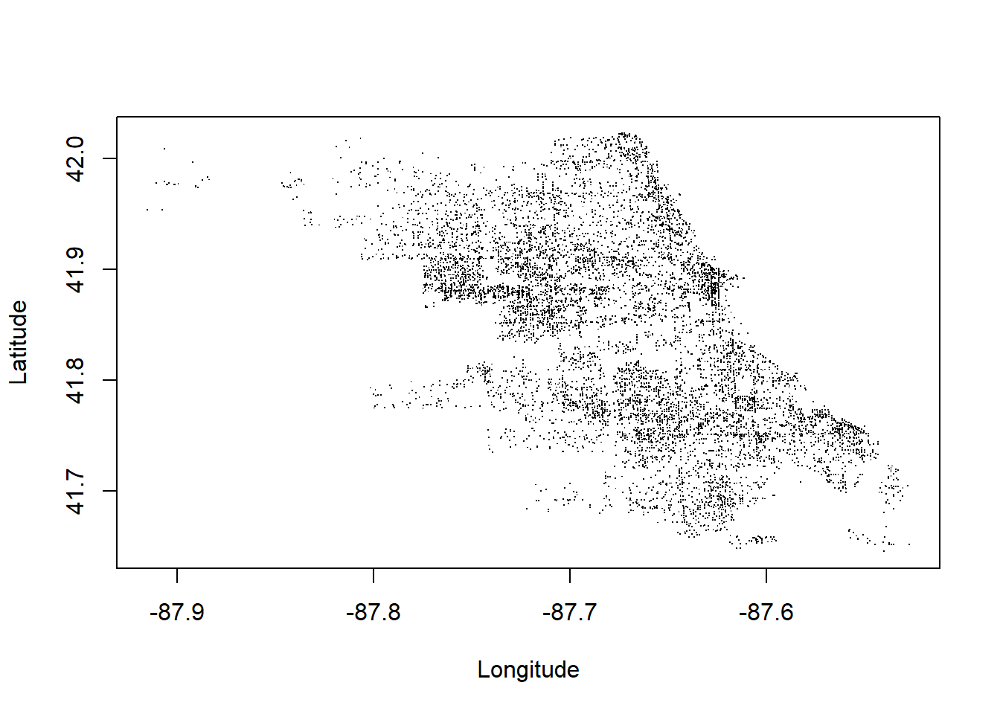
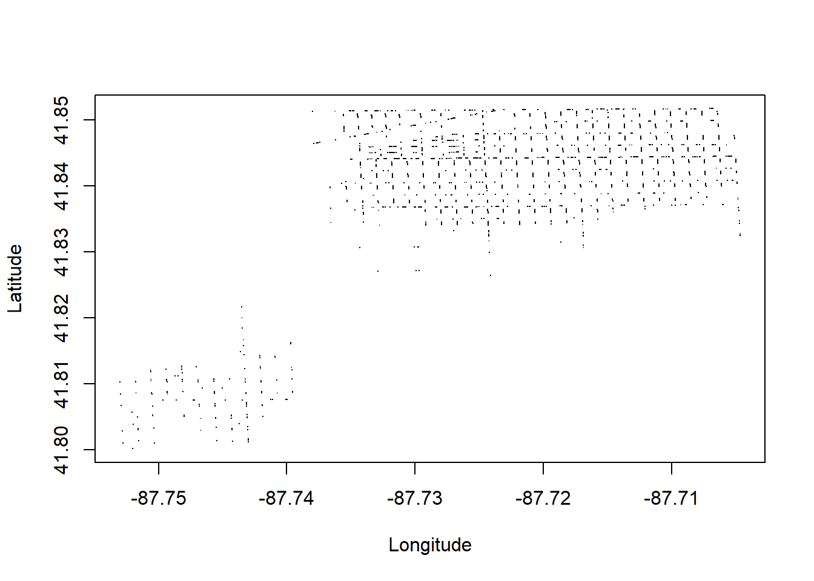

library(dplyr)
library(sqldf)Introduction to SQL
1 Introduction
Some datasets are far too large for R to handle by itself. Structured Query Language (“SQL”) is a widely used international standard language for managing data stored in a relational databases management system. A relational database management system itself is an approach to managing data using a structure that can be contrasted against the ‘flat file’ approach we have been using thus far with R. Why use SQL? R doesn’t work very well with really huge datasets. A relational database management system offers a way of storing large amounts of information more efficiently and reducing the size of the dataset that we are working with. There are numerous relational database management systems such as Oracle, Microsoft Access, and MySQL. We are going to use SQLite, which is probably the most widely deployed database system. SQLite is in your phone, car, airplanes, thermostats, and numerous appliances. We are going to hook up SQLite to R so that R can handle large datasets.
These are some basic clauses in a SQL query that we will explore:
SELECT fields or functions of fields INTO results table FROM tables queried WHERE conditions for selecting a record GROUP BY list of fields to group ORDER BY list of fields to sort by
However, before being able to use SQL as a tool in R, it will first be necessary to install the sqldf package.
2 Getting the data into proper form
We will be working with Chicago crime data, which is accessible comma separated value (csv) format. Before we can even being learning SQL, we are going to have to do a fair bit of work to acquire the dataset, format it so that it is ready for SQLite, and then load it into the SQLite database.
Navigate to the Chicago open data website to get the data. Click the “Export” button and select the “CSV” option, or directly download from here
The Chicago crime data is huge, more than 2.0 Gb. It contains over 8.3 million records on all crimes reported to the Chicago police department since 2001. R does not handle really large datasets well. By using SQL, you will learn how to more efficiently work with large datasets and learn a data language that is used absolutely everywhere.
Let’s use scan() to just peek at the first three rows of the file.
scan(what="",file="Crimes_-_2001_to_present.csv",nlines=5,sep="\n")[1] "ID,Case Number,Date,Block,IUCR,Primary Type,Description,Location Description,Arrest,Domestic,Beat,District,Ward,Community Area,FBI Code,X Coordinate,Y Coordinate,Year,Updated On,Latitude,Longitude,Location"
[2] "13311263,JG503434,07/29/2022 03:39:00 AM,023XX S TROY ST,1582,OFFENSE INVOLVING CHILDREN,CHILD PORNOGRAPHY,RESIDENCE,true,false,1033,010,25,30,17,,,2022,04/18/2024 03:40:59 PM,,,"
[3] "13053066,JG103252,01/03/2023 04:44:00 PM,039XX W WASHINGTON BLVD,2017,NARCOTICS,MANUFACTURE / DELIVER - CRACK,SIDEWALK,true,false,1122,011,28,26,18,,,2023,01/20/2024 03:41:12 PM,,,"
[4] "12131221,JD327000,08/10/2020 09:45:00 AM,015XX N DAMEN AVE,0326,ROBBERY,AGGRAVATED VEHICULAR HIJACKING,STREET,true,false,1424,014,1,24,03,1162795,1909900,2020,05/17/2025 03:40:52 PM,41.908417822,-87.67740693,\"(41.908417822, -87.67740693)\""
[5] "11227634,JB147599,08/26/2017 10:00:00 AM,001XX W RANDOLPH ST,0281,CRIM SEXUAL ASSAULT,NON-AGGRAVATED,HOTEL/MOTEL,false,false,0122,001,42,32,02,,,2017,02/11/2018 03:57:41 PM,,," scan() is a very basic R function that reads in plain text files. We’ve told it to read in text (what==""), the name of the file, to only read in 5 lines (nlines=5), and to start a new row whenever it reaches a line feed character (sep="\n"). Using scan() without nlines=5 would cause R to try to read in the whole dataset and that could take a lot of time and you might run out of memory.
You can see that the first row contains the column names. The second row contains the first reported crime in the file. You can see date and time, address, crime descriptions, longitude and latitude of the crime, and other information.
Let’s try to load this file into a SQLite database. There are two steps. First, using dbConnect() we need to tell R to make a connection to a new SQLite database that we will call chicagocrime.db. This will be a file in your working folder that SQLite will use to store the data.
# create a connection to the database
con <- dbConnect(SQLite(), dbname="chicagocrime.db")Then using dbWriteTable() we tell R to read in the csv file and store its contents in a new table in the database. We will call that new table crime. Make sure that your path is set to the correct folder where you want the database to be stored.
# write a table called "crime" into the SQLite database
dbWriteTable(con,
"crime", # the new table in the database
"Crimes_-_2001_to_present.csv",
row.names=FALSE,
header=TRUE) # first row has column namesError in connection_import_file(conn@ptr, name, value, sep, eol, skip): RS_sqlite_import: Crimes_-_2001_to_present.csv line 4 expected 22 columns of data but found 23Looks like there is a problem with the dataset. SQLite was expecting 22 columns, but row 4 had 23. Notice from when we ran scan() earlier, the fourth row has a "(41.908417822, -87.67740693)". SQLite thinks that these two numbers belong in two different columns instead of a single Location column.
SQLite is very particular about the formatting of a file. It can easily read in a csv file, but this dataset has some commas in places that confuse SQLite. For example, there is a row in this file that looks like this:
[1] "10000153,HY189345,03/18/2015 12:20:00 PM,091XX S UNIVERSITY AVE,0483,BATTERY,AGG PRO.EMP: OTHER DANG WEAPON,\"SCHOOL, PUBLIC, BUILDING\",true,false,0413,004,8,47,04B,1185475,1844606,2015,02/10/2018 03:50:01 PM,41.728740563,-87.596150779,\"(41.728740563, -87.596150779)\""You see that the location description for this crime is "SCHOOL, PUBLIC, BUILDING". Those commas inside the quotes are going to cause SQLite problems. SQLite is going to think that SCHOOL, PUBLIC, and BUILDING are all separate columns rather than one columns describing the location.
To resolve this, we are going to change all the commas that separate the columns into something else besides commas, leaving the commas in elements like "SCHOOL, PUBLIC, BUILDING" alone. It does not matter what we use to separate the fields, but it should be an unusual character that would not appear anywhere else in the dataset. Popular choices in the vertical bar (|) and the semicolon (;). So let’s take a slight detour to find out how to convert a comma-separated file into a semicolon separated file.
You will know if you need to convert your file if, when you try to set up your SQL database, you receive an error message about an “extra column.”
We are going to use a while loop to read in 1,000,000 rows of the our data file at a time. R can handle 1,000,000 rows. With the 1,000,000 rows read in, we will use a regular expression to replace all the commas used for separating columns with semicolons. Then we will write out the resulting cleaned up rows into a new file. It is a big file so this code can take a few minutes to run to completion.
infile <- file("Crimes_-_2001_to_present.csv", 'r') # 'r' for 'read'
outfile <- file("Crimes_-_2001_to_present-clean.csv", 'w') # 'w' for 'write'
# fix the Row #1 with the columns names
readLines(infile, n=1) |>
gsub(",", ";", x=_) |> # separate with ;
gsub(" ", "", x=_) |> # SQL doesn't like field names with .,-,space
writeLines(con=outfile)
cLines <- 0 # just a counter for the number of lines read
# read in 1000000 lines. keep going if more than 0 lines read
while ((length(a <- readLines(infile, n=1000000)) > 0))
{
cLines <- cLines + length(a) # increase the line counter
cLines |> format(big.mark=",", scientific=FALSE) |> message()
# remove any semicolons if they are there
a <- gsub(";", "", a)
# use ?= to "lookahead" for paired quotes
a <- gsub(",(?=([^\"]|\"[^\"]*\")*$)", ";", a, perl=TRUE)
# write the cleaned up data to storage
writeLines(a, con=outfile)
}1,000,0002,000,0003,000,0004,000,0005,000,0006,000,0007,000,0008,000,0008,377,991close(infile)
close(outfile)Now, let’s take a look at the first five lines of the new file we just created.
scan(what="",file="Crimes_-_2001_to_present-clean.csv",nlines=5,sep="\n")[1] "ID;CaseNumber;Date;Block;IUCR;PrimaryType;Description;LocationDescription;Arrest;Domestic;Beat;District;Ward;CommunityArea;FBICode;XCoordinate;YCoordinate;Year;UpdatedOn;Latitude;Longitude;Location"
[2] "13311263;JG503434;07/29/2022 03:39:00 AM;023XX S TROY ST;1582;OFFENSE INVOLVING CHILDREN;CHILD PORNOGRAPHY;RESIDENCE;true;false;1033;010;25;30;17;;;2022;04/18/2024 03:40:59 PM;;;"
[3] "13053066;JG103252;01/03/2023 04:44:00 PM;039XX W WASHINGTON BLVD;2017;NARCOTICS;MANUFACTURE / DELIVER - CRACK;SIDEWALK;true;false;1122;011;28;26;18;;;2023;01/20/2024 03:41:12 PM;;;"
[4] "12131221;JD327000;08/10/2020 09:45:00 AM;015XX N DAMEN AVE;0326;ROBBERY;AGGRAVATED VEHICULAR HIJACKING;STREET;true;false;1424;014;1;24;03;1162795;1909900;2020;05/17/2025 03:40:52 PM;41.908417822;-87.67740693;\"(41.908417822, -87.67740693)\""
[5] "11227634;JB147599;08/26/2017 10:00:00 AM;001XX W RANDOLPH ST;0281;CRIM SEXUAL ASSAULT;NON-AGGRAVATED;HOTEL/MOTEL;false;false;0122;001;42;32;02;;;2017;02/11/2018 03:57:41 PM;;;" You now see that semicolons separate the columns rather than commas. That previous record that had the location description “SCHOOL, PUBLIC, BUILDING” now looks like this:
[1] "10000153;HY189345;03/18/2015 12:20:00 PM;091XX S UNIVERSITY AVE;0483;BATTERY;AGG PRO.EMP: OTHER DANG WEAPON;\"SCHOOL, PUBLIC, BUILDING\";true;false;0413;004;8;47;04B;1185475;1844606;2015;02/10/2018 03:50:01 PM;41.728740563;-87.596150779;\"(41.728740563, -87.596150779)\""Note that the commas are still there inside the quotes. Now we will be able to tell SQLite to look for semicolons to separate the columns.
3 Setting up the database
Now that the csv file containing the data is ready, we can load it into SQLite.
# peek at the first few rows of the dataset
a <- read.table("Crimes_-_2001_to_present-clean.csv",
sep=";",nrows=5,header=TRUE)
# ask SQLite what data type it plans to use to store each column (eg number, text)
variabletypes <- dbDataType(con, a)
# make sure these features are stored as TEXT
variabletypes[c("IUCR","FBICode","Ward","District","CommunityArea")] <- "TEXT"
# just in case you've already created a "crime" table, delete it
if(dbExistsTable(con, "crime")) dbRemoveTable(con, "crime")
# import the data file into the database
dbWriteTable(con, "crime", # create crime table
"Crimes_-_2001_to_present-clean.csv", # from our cleaned up file
row.names=FALSE,
header=TRUE, # first row has column names
field.types=variabletypes,
sep=";") # columns separated with ;
# does the table exist?
dbListTables(con)[1] "crime"# a quick check to see if all the columns are there
dbListFields(con,"crime") [1] "ID" "CaseNumber" "Date"
[4] "Block" "IUCR" "PrimaryType"
[7] "Description" "LocationDescription" "Arrest"
[10] "Domestic" "Beat" "District"
[13] "Ward" "CommunityArea" "FBICode"
[16] "XCoordinate" "YCoordinate" "Year"
[19] "UpdatedOn" "Latitude" "Longitude"
[22] "Location" # disconnect from the database to finalize
dbDisconnect(con)You will know if the database has been successfully set up if you find a chicagocrime.db file that has about 2 Gb of data in it. If the file size is 0 or really small, then you may be looking in the wrong folder or the data cleaning and import did not finish.
# how many gigabytes?
(file.size("chicagocrime.db")/10^9) |>
round(1) |>
format(nsmall=1, scientific=FALSE)[1] "1.9"Once you have successfully set up your database, there is no reason to run these lines of code again. You should never again need to turn commas into semicolons or run dbWriteTable(). Instead, every time you want to work with your database, you can simply need to reconnect to the database with:
con <- dbConnect(SQLite(), dbname="chicagocrime.db")Note that if you are using a cloud-based backup service like iCloud, OneDrive, or Google Drive, you might need to wait until your “db” file has completely synced before you can access your database. For this reason I typically put my SQLite databases in a folder that does not get backed up. If I accidentally delete it, then I just rerun the code to rebuild the database.
4 SQL queries (SELECT, WHERE, FROM)
You have now created a database chicagocrime.db containing a table called crime that contains those 8 million crime records.
Two important clauses with an SQL query are SELECT and FROM. Unlike R, SQL queries are not case-sensitive and column names are not case-sensitive. So if we were to type “SELECT” as “select” or “Description” as “dEsCrIpTiOn”, the SQL query would do the same thing. However, the tradition is to put SQL keywords in all uppercase to make it easier to distinguish them from table and column names.
The SELECT clause tells SQL which columns in particular you would like to see. The FROM clause simply tells SQL from which table it should pull the data. In this query, we are interested in only the ID and Description columns.
dbGetQuery(con,
"SELECT ID, Description
FROM crime",
n = 10) # just the first 10 rows ID Description
1 13311263 CHILD PORNOGRAPHY
2 13053066 MANUFACTURE / DELIVER - CRACK
3 12131221 AGGRAVATED VEHICULAR HIJACKING
4 11227634 NON-AGGRAVATED
5 13203321 TO VEHICLE
6 13204489 OVER $500
7 11695116 UNLAWFUL ENTRY
8 12419690 SEXUAL EXPLOITATION OF A CHILD
9 12729745 ATTEMPT STRONG ARM - NO WEAPON
10 12835559 AUTOMOBILEdbGetQuery() pulls the selected rows (first 10) from the selected columns (ID and Description). Sometimes it is preferable to get large datasets in smaller chunks using dbSendQuery() and dbFetch().
res <- dbSendQuery(con, "
SELECT ID,Description
FROM crime")
# pull the first 10 lines
dbFetch(res, n = 10) ID Description
1 13311263 CHILD PORNOGRAPHY
2 13053066 MANUFACTURE / DELIVER - CRACK
3 12131221 AGGRAVATED VEHICULAR HIJACKING
4 11227634 NON-AGGRAVATED
5 13203321 TO VEHICLE
6 13204489 OVER $500
7 11695116 UNLAWFUL ENTRY
8 12419690 SEXUAL EXPLOITATION OF A CHILD
9 12729745 ATTEMPT STRONG ARM - NO WEAPON
10 12835559 AUTOMOBILE# pull the next 10 lines
dbFetch(res, n = 10) ID Description
1 13003649 FORCIBLE ENTRY
2 13061203 DOMESTIC BATTERY SIMPLE
3 13256787 DOMESTIC BATTERY SIMPLE
4 13116982 RECKLESS HOMICIDE
5 13364090 "PROTECTED EMPLOYEE - HANDS, FISTS, FEET, NO / MINOR INJURY"
6 13376308 "AGGRAVATED P.O. - HANDS, FISTS, FEET, NO / MINOR INJURY"
7 27382 FIRST DEGREE MURDER
8 27547 FIRST DEGREE MURDER
9 6255892 ARMED - HANDGUN
10 6272641 STRONG ARM - NO WEAPON# when finished, clear the rest of the results
dbClearResult(res)dbClearResult(res) tells SQLite that we are all done with this query. We have displayed the first 20 rows. SQLite is standing by with another 8 million rows to show us, but dbClearResult(res) tells SQLite that we are no longer interested in this query and it can clear out whatever it has stored for us.
In the previous SQL query we just asked for ID and Description. Typing out all of the column names would be tiresome, so SQL lets you use a * to select all the columns. If we want to look at the first 10 rows but all of the columns, we would use this query:
dbGetQuery(con, "
SELECT *
FROM crime",
n = 3)Warning: Column `XCoordinate`: mixed type, first seen values of type string,
coercing other values of type integerWarning: Column `YCoordinate`: mixed type, first seen values of type string,
coercing other values of type integerWarning: Column `Latitude`: mixed type, first seen values of type string,
coercing other values of type realWarning: Column `Longitude`: mixed type, first seen values of type string,
coercing other values of type real ID CaseNumber Date Block IUCR
1 13311263 JG503434 07/29/2022 03:39:00 AM 023XX S TROY ST 1582
2 13053066 JG103252 01/03/2023 04:44:00 PM 039XX W WASHINGTON BLVD 2017
3 12131221 JD327000 08/10/2020 09:45:00 AM 015XX N DAMEN AVE 0326
PrimaryType Description LocationDescription
1 OFFENSE INVOLVING CHILDREN CHILD PORNOGRAPHY RESIDENCE
2 NARCOTICS MANUFACTURE / DELIVER - CRACK SIDEWALK
3 ROBBERY AGGRAVATED VEHICULAR HIJACKING STREET
Arrest Domestic Beat District Ward CommunityArea FBICode XCoordinate
1 true false 1033 010 25 30 17
2 true false 1122 011 28 26 18
3 true false 1424 014 1 24 03 1162795
YCoordinate Year UpdatedOn Latitude Longitude
1 2022 04/18/2024 03:40:59 PM
2 2023 01/20/2024 03:41:12 PM
3 1909900 2020 05/17/2025 03:40:52 PM 41.908417822 -87.67740693
Location
1 \r
2 \r
3 "(41.908417822, -87.67740693)"\rIn addition to showing us the first three rows in their entirety, we get some warnings here regarding the coordinates of the crime that we will have to deal with later. The issue involves how SQL stores missing values.
Just as SELECT filters the columns, the WHERE clause filters the rows. Note the use of AND and OR in the WHERE clause. Here we select three columns: ID, Description, and LocationDescription. Also, we want only rows where
- the value in the
Beatcolumn is “611” - the value in the
Arrestcolumn is “true” - the value in the
ICURcolumn is either “0486” or “0498”
Importantly, note the use of single (not double) quotation marks in the WHERE line. The reason is that if we used double quotes, then R will think that the double quote signals the end of the query.
a <- dbGetQuery(con, "
SELECT ID, Description, LocationDescription
FROM crime
WHERE ((Beat=611) AND
(Arrest='true')) AND
((IUCR='0486') OR (IUCR='0498'))")
# show the first few rows of the results
head(a, 3) ID Description LocationDescription
1 13248950 DOMESTIC BATTERY SIMPLE APARTMENT
2 13254239 DOMESTIC BATTERY SIMPLE SIDEWALK
3 13287327 DOMESTIC BATTERY SIMPLE APARTMENTSQL does not like column names with special characters. Only letters (first character must be a letter), numbers, and underscores (_). Column names also cannot be a SQl keyword, like SELECT or WHERE. If you happen to have a table with any special characters, like periods, hyphens, or spaces, you can “protect” the column name in square brackets. For example, SELECT [incident id], [text-description], [location.description], [where].
4.1 Exercises
Select records from Beat 234
Select Beat, District, Ward, and Community Area for all “ASSAULT”s
Select records on assaults from Beat 234
Make a table of the number of assaults (IUCR 0560) by Ward
5 GROUP_BY and aggregation functions
We have already covered SQL clauses SELECT, WHERE, and FROM. The SQL function COUNT(*) and GROUP BY are also very useful. For example, the following query counts how many assaults (IUCR 0560) occurred by ward. COUNT() is a SQL “aggregate” function, a function that performs a calculation on a group of values and returns a single number. Other SQL aggregate functions include AVG(), MIN(), MAX(), and SUM(). This query will group all the records by Ward and then apply the aggregate function COUNT() and report that value in a column called crimecount. AS allows us to give clear column names in the results. Without the AS crimecount column of counts would be called COUNT(*), which has several characters about which SQL will complain.
a <- dbGetQuery(con, "
SELECT COUNT(*) AS crimecount,
Ward
FROM crime
WHERE IUCR='0560'
GROUP BY Ward")
print(a) crimecount Ward
1 29470
2 5294 1
3 8084 10
4 5069 11
5 4269 12
6 3845 13
7 4248 14
8 9540 15
9 11296 16
10 13640 17
11 6116 18
12 3539 19
13 10769 2
14 13080 20
15 11463 21
16 4336 22
17 4078 23
18 12580 24
19 5298 25
20 6472 26
21 11677 27
22 15108 28
23 8886 29
24 11755 3
25 4443 30
26 4497 31
27 3240 32
28 2999 33
29 11092 34
30 4457 35
31 3727 36
32 9332 37
33 3418 38
34 2929 39
35 8537 4
36 3728 40
37 3227 41
38 9674 42
39 2185 43
40 3163 44
41 3609 45
42 5186 46
43 2689 47
44 3954 48
45 5184 49
46 9245 5
47 3320 50
48 12902 6
49 11773 7
50 11697 8
51 11710 9The GROUP BY clause is critical. If you forget it then the result is not well defined. That is, different implementations of SQL may produce different results. The rule you should remember is that “every non-aggregated column in the SELECT clause should appear in the GROUP BY clause.” Here Ward is not part of the aggregate function COUNT() so it must appear in the GROUP BY clause.
5.1 Exercises
Count the number of crimes by
PrimaryTypeCount the number of crimes resulting in arrest
Count the number of crimes by
LocationDescription.LocationDescriptionis the variable that tells us where (e.g., a parking lot, a barbershop, a fire station, a CTA train, or a motel) a crime occurred
6 ORDER_BY and UPDATE
MAX, MIN, SUM, AVG are common (and useful) aggregating functions. The ORDER BY clause sorts the results for us. It is the SQL version of the sort() or arrange() functions. Here is an illustration that gives the range of beat numbers in each policing district.
dbGetQuery(con, "
SELECT MIN(Beat) AS min_beat,
MAX(Beat) AS max_beat,
District
FROM crime
GROUP BY District
ORDER BY District") min_beat max_beat District
1 124 2535
2 111 2535 001
3 131 2232 002
4 133 2222 003
5 324 2514 004
6 333 2233 005
7 123 2424 006
8 233 2431 007
9 333 2411 008
10 131 2522 009
11 133 2534 010
12 624 2535 011
13 111 2525 012
14 411 2535 014
15 726 2533 015
16 811 2521 016
17 734 2523 017
18 111 2533 018
19 112 2533 019
20 112 2433 020
21 2112 2112 021
22 214 2234 022
23 123 2433 024
24 725 2535 025
25 124 2535 031
26 1614 1614 16Remember that the GROUP BY clause should include every element of the SELECT clause that is not involved with an aggregate function. We have MIN() and MAX() operating on Beat, but District is on its own and should be placed in the GROUP BY clause.
Let’s look at our Latitude and Longitude columns, which will be extremely useful for mapping data points. The following query will give unexpected results.
dbGetQuery(con, "
SELECT MIN(Latitude) AS min_lat,
MAX(Latitude) AS max_lat,
MIN(Longitude) AS min_lon,
MAX(Longitude) AS max_lon,
District
FROM crime
GROUP BY District
ORDER BY District")Warning: Column `max_lat`: mixed type, first seen values of type real, coercing
other values of type stringWarning: Column `max_lon`: mixed type, first seen values of type real, coercing
other values of type string min_lat max_lat min_lon max_lon District
1 41.69991 42.00030 -87.87742 -87.59533
2 36.61945 0.00000 -91.68657 0.00000 001
3 36.61945 0.00000 -91.68657 0.00000 002
4 36.61945 0.00000 -91.68657 0.00000 003
5 36.61945 0.00000 -91.68657 0.00000 004
6 36.61945 0.00000 -91.68657 0.00000 005
7 36.61945 0.00000 -91.68657 0.00000 006
8 36.61945 0.00000 -91.68657 0.00000 007
9 36.61945 0.00000 -91.68657 0.00000 008
10 36.61945 0.00000 -91.68657 0.00000 009
11 36.61945 0.00000 -91.68657 0.00000 010
12 36.61945 0.00000 -91.68657 0.00000 011
13 36.61945 0.00000 -91.68657 0.00000 012
14 36.61945 0.00000 -91.68657 0.00000 014
15 36.61945 0.00000 -91.68657 0.00000 015
16 36.61945 0.00000 -91.68657 0.00000 016
17 36.61945 0.00000 -91.68657 0.00000 017
18 36.61945 0.00000 -91.68657 0.00000 018
19 41.80933 0.00000 -87.76791 0.00000 019
20 41.79145 0.00000 -87.76303 0.00000 020
21 41.83790 41.83790 -87.62192 -87.62192 021
22 36.61945 0.00000 -91.68657 0.00000 022
23 36.61945 0.00000 -91.68657 0.00000 024
24 36.61945 0.00000 -91.68657 0.00000 025
25 41.64619 42.01939 -87.93973 -87.53528 031
26 41.98531 41.98552 -87.83047 -87.82900 16We get some strange results here. max_lat equal to 0.0 is on the equator! It is doubtful that Chicago reported any equatorial crimes. The problem is that we have some blank values in Longitude and Latitude. Here are some of them.
dbGetQuery(con, "SELECT * FROM crime WHERE Longitude=''", n=3) ID CaseNumber Date Block IUCR
1 13311263 JG503434 07/29/2022 03:39:00 AM 023XX S TROY ST 1582
2 13053066 JG103252 01/03/2023 04:44:00 PM 039XX W WASHINGTON BLVD 2017
3 11227634 JB147599 08/26/2017 10:00:00 AM 001XX W RANDOLPH ST 0281
PrimaryType Description LocationDescription
1 OFFENSE INVOLVING CHILDREN CHILD PORNOGRAPHY RESIDENCE
2 NARCOTICS MANUFACTURE / DELIVER - CRACK SIDEWALK
3 CRIM SEXUAL ASSAULT NON-AGGRAVATED HOTEL/MOTEL
Arrest Domestic Beat District Ward CommunityArea FBICode XCoordinate
1 true false 1033 010 25 30 17
2 true false 1122 011 28 26 18
3 false false 122 001 42 32 02
YCoordinate Year UpdatedOn Latitude Longitude Location
1 2022 04/18/2024 03:40:59 PM \r
2 2023 01/20/2024 03:41:12 PM \r
3 2017 02/11/2018 03:57:41 PM \rNote the Latitude and the Longitude columns are blank. And have a look at these
dbGetQuery(con, "SELECT * FROM crime where Latitude<36.61946", n=3) ID CaseNumber Date Block IUCR PrimaryType
1 1482 HH367441 05/13/2002 05:00:00 AM 061XX S ARTESIAN ST 0110 HOMICIDE
2 838 G311269 05/29/2001 11:35:00 PM 059XX S MORGAN AV 0110 HOMICIDE
3 637 G005960 01/06/2001 10:35:00 AM 014XX N HARDING ST 0110 HOMICIDE
Description LocationDescription Arrest Domestic Beat District Ward
1 FIRST DEGREE MURDER HOUSE true false 825 008
2 FIRST DEGREE MURDER DUMPSTER true false 712 007
3 FIRST DEGREE MURDER STREET true false 2535 025
CommunityArea FBICode XCoordinate YCoordinate Year UpdatedOn
1 01A 0 0 2002 01/28/2024 03:40:59 PM
2 01A 0 0 2001 01/28/2024 03:40:59 PM
3 01A 0 0 2001 01/28/2024 03:40:59 PM
Latitude Longitude Location
1 36.61945 -91.68657 "(36.619446395, -91.686565684)"\r
2 36.61945 -91.68657 "(36.619446395, -91.686565684)"\r
3 36.61945 -91.68657 "(36.619446395, -91.686565684)"\rThe point (-91.68657, 36.61945) lands in Brandsville, Missouri, also highly unlikely locations for Chicago crime
We can tell SQLite to make the empty or missing values NULL, a more proper way to encode that these rows have missing coordinates. The UPDATE clause edits our table. R will read in NULL values as NA. After we do the update, we can rerun the MIN(), MAX() query. We can also assign NULL to latitudes and longitudes that are very close to 0.
Note that we use dbSendQuery() when updating since we are not asking for any rows of data to come back to us.
res <- dbSendQuery(con, "
UPDATE crime SET Latitude=NULL
WHERE (Latitude='') OR (ABS(Latitude-0.0) < 0.01) OR (Latitude < 36.7)")
dbClearResult(res)
res <- dbSendQuery(con, "
UPDATE crime SET Longitude=NULL
WHERE (Longitude='') OR (ABS(Longitude-0.0) < 0.01) OR (Longitude < -91.6)")
dbClearResult(res)Let’s rerun that query and check that we get more sensible results.
dbGetQuery(con, "
SELECT MIN(Latitude) AS min_lat,
MAX(Latitude) AS max_lat,
MIN(Longitude) AS min_lon,
MAX(Longitude) AS max_lon,
District
FROM crime
GROUP BY District
ORDER BY District") min_lat max_lat min_lon max_lon District
1 41.69991 42.00030 -87.87742 -87.59533
2 41.72827 41.98740 -87.84349 -87.54925 001
3 41.73298 41.97608 -87.70277 -87.56954 002
4 41.71424 41.79946 -87.73941 -87.55261 003
5 41.64467 41.79220 -87.72436 -87.52453 004
6 41.64459 41.88693 -87.73145 -87.54348 005
7 41.69249 42.01876 -87.77138 -87.55810 006
8 41.66806 42.01369 -87.68723 -87.57906 007
9 41.73453 42.01765 -87.80161 -87.55239 008
10 41.77015 41.97645 -87.71397 -87.60282 009
11 41.68357 41.94304 -87.74364 -87.61895 010
12 41.77163 41.90624 -87.76332 -87.62328 011
13 41.68544 41.96539 -87.76321 -87.60502 012
14 41.77688 42.01938 -87.80222 -87.65657 014
15 41.76641 41.94234 -87.77535 -87.63087 015
16 41.78464 42.01938 -87.93457 -87.58256 016
17 41.77950 42.01390 -87.75780 -87.66131 017
18 41.85952 41.96879 -87.76313 -87.60136 018
19 41.80933 41.98397 -87.76791 -87.58775 019
20 41.79145 42.00458 -87.76303 -87.62992 020
21 41.83790 41.83790 -87.62192 -87.62192 021
22 41.67709 41.85572 -87.74328 -87.58965 022
23 41.75988 42.02291 -87.79757 -87.62545 024
24 41.83930 41.94586 -87.81648 -87.64093 025
25 41.64619 42.01939 -87.93973 -87.53528 031
26 41.98531 41.98552 -87.83047 -87.82900 16Now we have results that are more in line with where Chicago actually is. Make it a habit to do some checks of your data before doing too much analysis.
And what city does the following plot have the shape of? Let’s plot the location of these crimes. Plotting all 8 million would be overkill, so let’s take a random sample of 10,000 crimes. Here is a SQL query that will do that. It uses some tricks we will learn more about later including the use of IN, the use of subqueries (a query within a query), and LIMIT. Does the shape of the plot look right?
a <- dbGetQuery(con, "
SELECT Longitude, Latitude
FROM crime
WHERE id IN (SELECT id
FROM crime
ORDER BY RANDOM()
LIMIT 10000)")
plot(Latitude~Longitude, data=a,
pch=".",
xlab="Longitude", ylab="Latitude")
6.1 Exercises
Plot the longitude and latitude of all “ASSAULT”s for Ward 22
What is the most common (Long,Lat) for assaults in Ward 22? Add the point to your plot using the
points()function.points()simply draws a point (or sequence of points) at the specified coordinates
7 Solutions to the exercises
- Select records from Beat 234
dbGetQuery(con, "
SELECT *
FROM crime
WHERE Beat=234",
n=5) Warning: Column `XCoordinate`: mixed type, first seen values of type integer,
coercing other values of type stringWarning: Column `YCoordinate`: mixed type, first seen values of type integer,
coercing other values of type string ID CaseNumber Date Block IUCR
1 13208531 JG408244 08/01/2023 12:00:00 PM 054XX S EAST VIEW PARK 0820
2 13203370 JG415497 09/07/2023 07:30:00 PM 051XX S KENWOOD AVE 1310
3 13207450 JG420345 09/07/2023 01:54:00 PM 054XX S BLACKSTONE AVE 0890
4 13203210 JG415469 09/07/2023 06:30:00 PM 052XX S BLACKSTONE AVE 0890
5 13206379 JG418537 01/01/2007 04:40:00 PM 053XX S SHORE DR 1153
PrimaryType Description LocationDescription
1 THEFT $500 AND UNDER STREET
2 CRIMINAL DAMAGE TO PROPERTY APARTMENT
3 THEFT FROM BUILDING APARTMENT
4 THEFT FROM BUILDING APARTMENT
5 DECEPTIVE PRACTICE FINANCIAL IDENTITY THEFT OVER $ 300
Arrest Domestic Beat District Ward CommunityArea FBICode XCoordinate
1 false false 234 002 5 41 06 1188934
2 false true 234 002 4 41 14 1185980
3 false false 234 002 5 41 06 1186841
4 false false 234 002 4 41 06 1186800
5 false false 234 002 5 41 11 0
YCoordinate Year UpdatedOn Latitude Longitude
1 1869643 2023 09/14/2023 03:41:59 PM 41.79736 -87.58268
2 1871242 2023 09/15/2023 03:42:23 PM 41.80182 -87.59346
3 1869253 2023 09/15/2023 03:42:23 PM 41.79634 -87.59037
4 1870814 2023 09/15/2023 03:42:23 PM 41.80063 -87.59047
5 0 2007 09/16/2023 03:42:58 PM NA NA
Location
1 "(41.79736226, -87.582679493)"\r
2 "(41.801820311, -87.593461583)"\r
3 "(41.796341968, -87.590367054)"\r
4 "(41.80062644, -87.590467932)"\r
5 \r- Select Beat, District, Ward, and Community Area for all “ASSAULT”s
dbGetQuery(con, "
SELECT Beat, District, Ward, CommunityArea, PrimaryType
FROM crime
WHERE PrimaryType='ASSAULT'",
n=5) Beat District Ward CommunityArea PrimaryType
1 2515 025 36 19 ASSAULT
2 1713 017 33 14 ASSAULT
3 631 006 6 44 ASSAULT
4 322 003 6 69 ASSAULT
5 1533 015 29 25 ASSAULT- Select records on assaults from Beat 234
dbGetQuery(con, "
SELECT *
FROM crime
WHERE (Beat=234) AND (PrimaryType='ASSAULT')",
n=5) ID CaseNumber Date Block IUCR
1 13276965 JG502615 11/10/2023 09:00:00 AM 015XX E HYDE PARK BLVD 0560
2 13207370 JG420456 09/10/2023 05:19:00 PM 053XX S HYDE PARK BLVD 0560
3 13210166 JG421339 09/12/2023 01:30:00 PM 015XX E 53RD ST 0560
4 13273166 JG499223 11/10/2023 04:39:00 PM 015XX E 53RD ST 0560
5 13225905 JG442370 09/11/2023 04:15:00 PM 054XX S CORNELL AVE 0560
PrimaryType Description LocationDescription Arrest Domestic Beat District
1 ASSAULT SIMPLE ATHLETIC CLUB false false 234 002
2 ASSAULT SIMPLE APARTMENT false false 234 002
3 ASSAULT SIMPLE STREET false false 234 002
4 ASSAULT SIMPLE SMALL RETAIL STORE false false 234 002
5 ASSAULT SIMPLE APARTMENT false false 234 002
Ward CommunityArea FBICode XCoordinate YCoordinate Year
1 4 41 08A 1187293 1871488 2023
2 5 41 08A 1188556 1870311 2023
3 4 41 08A 1187634 1870434 2023
4 5 41 08A 1187748 1870436 2023
5 5 41 08A 1188178 1869513 2023
UpdatedOn Latitude Longitude Location
1 11/18/2023 03:40:25 PM 41.80246 -87.58864 "(41.802464238, -87.588638554)"\r
2 09/18/2023 03:42:32 PM 41.79920 -87.58404 "(41.799204348, -87.584044296)"\r
3 09/20/2023 03:42:29 PM 41.79956 -87.58742 "(41.799563873, -87.587421525)"\r
4 11/18/2023 03:40:25 PM 41.79957 -87.58700 "(41.799566646, -87.5870034)"\r
5 09/30/2023 03:41:20 PM 41.79702 -87.58546 "(41.797023613, -87.585455951)"\r- Make a table of the number of assaults (IUCR 0560) by Ward
We could select all the IUCR codes and ward with SQL and then filter and tabulate the data in R.
# system.time() reports how long it takes to run the SQL query
# How long if we retrieve data from SQL and tabulate in R?
system.time(
{
data <- dbGetQuery(con, "
SELECT IUCR,Ward
FROM crime")
data |>
filter(IUCR=="0560") |>
count(Ward)
}) user system elapsed
3.08 1.96 5.14 Or we could make SQL do all the work selecting and tabulating.
# How long if we make SQL do all the work?
system.time(
{
a <- dbGetQuery(con, "
SELECT COUNT(*) AS crimecount,
Ward
FROM crime
WHERE IUCR='0560'
GROUP BY Ward")
}) user system elapsed
0.57 1.67 2.22 Generally, SQL will be much faster for general selecting, filtering, tabulating, and linking data.
- Count the number of crimes by
PrimaryType
dbGetQuery(con, "
SELECT COUNT(*) AS crimecount,
PrimaryType
FROM crime
GROUP BY PrimaryType") crimecount PrimaryType
1 14354 ARSON
2 560071 ASSAULT
3 1526524 BATTERY
4 443249 BURGLARY
5 1609 CONCEALED CARRY LICENSE VIOLATION
6 27303 CRIM SEXUAL ASSAULT
7 952792 CRIMINAL DAMAGE
8 11111 CRIMINAL SEXUAL ASSAULT
9 225607 CRIMINAL TRESPASS
10 384905 DECEPTIVE PRACTICE
11 1 DOMESTIC VIOLENCE
12 14660 GAMBLING
13 13883 HOMICIDE
14 136 HUMAN TRAFFICKING
15 20050 INTERFERENCE WITH PUBLIC OFFICER
16 5067 INTIMIDATION
17 7478 KIDNAPPING
18 15348 LIQUOR LAW VIOLATION
19 427418 MOTOR VEHICLE THEFT
20 762440 NARCOTICS
21 38 NON - CRIMINAL
22 190 NON-CRIMINAL
23 9 NON-CRIMINAL (SUBJECT SPECIFIED)
24 942 OBSCENITY
25 60129 OFFENSE INVOLVING CHILDREN
26 162 OTHER NARCOTIC VIOLATION
27 522174 OTHER OFFENSE
28 70363 PROSTITUTION
29 215 PUBLIC INDECENCY
30 54573 PUBLIC PEACE VIOLATION
31 24 RITUALISM
32 313479 ROBBERY
33 33970 SEX OFFENSE
34 6032 STALKING
35 1777761 THEFT
36 123924 WEAPONS VIOLATION- Count the number of crimes resulting in arrest
dbGetQuery(con, "
SELECT COUNT(*) AS crimecount, PrimaryType
FROM crime
WHERE Arrest='true'
GROUP BY PrimaryType") crimecount PrimaryType
1 1769 ARSON
2 113606 ASSAULT
3 330925 BATTERY
4 25340 BURGLARY
5 1554 CONCEALED CARRY LICENSE VIOLATION
6 4365 CRIM SEXUAL ASSAULT
7 62027 CRIMINAL DAMAGE
8 811 CRIMINAL SEXUAL ASSAULT
9 153567 CRIMINAL TRESPASS
10 47726 DECEPTIVE PRACTICE
11 1 DOMESTIC VIOLENCE
12 14554 GAMBLING
13 6659 HOMICIDE
14 13 HUMAN TRAFFICKING
15 18365 INTERFERENCE WITH PUBLIC OFFICER
16 731 INTIMIDATION
17 798 KIDNAPPING
18 15199 LIQUOR LAW VIOLATION
19 32501 MOTOR VEHICLE THEFT
20 757507 NARCOTICS
21 6 NON - CRIMINAL
22 18 NON-CRIMINAL
23 3 NON-CRIMINAL (SUBJECT SPECIFIED)
24 699 OBSCENITY
25 11627 OFFENSE INVOLVING CHILDREN
26 108 OTHER NARCOTIC VIOLATION
27 92239 OTHER OFFENSE
28 70052 PROSTITUTION
29 211 PUBLIC INDECENCY
30 34078 PUBLIC PEACE VIOLATION
31 3 RITUALISM
32 28982 ROBBERY
33 8656 SEX OFFENSE
34 730 STALKING
35 192818 THEFT
36 89935 WEAPONS VIOLATIONOr, if we were not interested in differentiating based on the PrimaryType, we could simply do the following:
dbGetQuery(con, "
SELECT COUNT(*) AS crimecount
FROM crime
WHERE Arrest='true'") crimecount
1 2118183- Count the number of crimes by
LocationDescription
dbGetQuery(con, "
SELECT COUNT(*) AS crimecount, LocationDescription
FROM crime
GROUP BY LocationDescription
ORDER BY crimecount DESC") crimecount LocationDescription
1 2188634 STREET
2 1378068 RESIDENCE
3 992559 APARTMENT
4 759893 SIDEWALK
5 269956 OTHER
6 202933 PARKING LOT/GARAGE(NON.RESID.)
7 186576 ALLEY
8 167776 SMALL RETAIL STORE
9 146370 "SCHOOL, PUBLIC, BUILDING"
10 140579 RESTAURANT
11 135280 RESIDENCE-GARAGE
12 132667 VEHICLE NON-COMMERCIAL
13 124167 RESIDENCE PORCH/HALLWAY
14 110654 DEPARTMENT STORE
15 104657 GROCERY FOOD STORE
16 93505 GAS STATION
17 75140 RESIDENTIAL YARD (FRONT/BACK)
18 68975 COMMERCIAL / BUSINESS OFFICE
19 63192 PARK PROPERTY
20 56098 CHA PARKING LOT/GROUNDS
21 46948 BAR OR TAVERN
22 44351 PARKING LOT / GARAGE (NON RESIDENTIAL)
23 41231 CTA PLATFORM
24 40395 CHA APARTMENT
25 39543 DRUG STORE
26 34321 CTA TRAIN
27 33028 BANK
28 30249 "SCHOOL, PUBLIC, GROUNDS"
29 29723 HOTEL/MOTEL
30 27614 CONVENIENCE STORE
31 27368 CTA BUS
32 25021 CHA HALLWAY/STAIRWELL/ELEVATOR
33 24679 VACANT LOT/LAND
34 24623 DRIVEWAY - RESIDENTIAL
35 22836 OTHER (SPECIFY)
36 22458 TAVERN/LIQUOR STORE
37 22189 HOSPITAL BUILDING/GROUNDS
38 18560 POLICE FACILITY/VEH PARKING LOT
39 17570 RESIDENCE - PORCH / HALLWAY
40 16296 AIRPORT/AIRCRAFT
41 15488 CHURCH/SYNAGOGUE/PLACE OF WORSHIP
42 15153 RESIDENCE - YARD (FRONT / BACK)
43 14757 GOVERNMENT BUILDING/PROPERTY
44 14671
45 14656 NURSING HOME/RETIREMENT HOME
46 14357 RESIDENCE - GARAGE
47 14324 CONSTRUCTION SITE
48 14182 "SCHOOL, PRIVATE, BUILDING"
49 12404 CURRENCY EXCHANGE
50 12174 ABANDONED BUILDING
51 10697 WAREHOUSE
52 10276 CTA GARAGE / OTHER PROPERTY
53 10238 ATHLETIC CLUB
54 8800 CTA BUS STOP
55 8772 BARBERSHOP
56 8705 ATM (AUTOMATIC TELLER MACHINE)
57 7814 TAXICAB
58 7803 CTA STATION
59 7553 SCHOOL - PUBLIC BUILDING
60 7453 LIBRARY
61 7429 MEDICAL/DENTAL OFFICE
62 7395 HOSPITAL BUILDING / GROUNDS
63 6892 FACTORY/MANUFACTURING BUILDING
64 6703 SCHOOL - PUBLIC GROUNDS
65 6656 HOTEL / MOTEL
66 5930 OTHER RAILROAD PROP / TRAIN DEPOT
67 5787 COLLEGE/UNIVERSITY GROUNDS
68 5627 AIRPORT TERMINAL UPPER LEVEL - SECURE AREA
69 5615 VEHICLE-COMMERCIAL
70 5333 CLEANING STORE
71 5290 SPORTS ARENA/STADIUM
72 4292 "SCHOOL, PRIVATE, GROUNDS"
73 4195 POLICE FACILITY / VEHICLE PARKING LOT
74 4051 NURSING / RETIREMENT HOME
75 3849 VACANT LOT / LAND
76 3760 DAY CARE CENTER
77 3600 CAR WASH
78 3567 OTHER COMMERCIAL TRANSPORTATION
79 2800 TAVERN / LIQUOR STORE
80 2732 MOVIE HOUSE/THEATER
81 2676 GOVERNMENT BUILDING / PROPERTY
82 2668 AIRPORT TERMINAL LOWER LEVEL - NON-SECURE AREA
83 2594 APPLIANCE STORE
84 2351 CHA PARKING LOT / GROUNDS
85 2343 CHURCH / SYNAGOGUE / PLACE OF WORSHIP
86 1865 AIRPORT PARKING LOT
87 1652 MEDICAL / DENTAL OFFICE
88 1630 AUTO / BOAT / RV DEALERSHIP
89 1528 AIRPORT BUILDING NON-TERMINAL - NON-SECURE AREA
90 1497 SCHOOL - PRIVATE GROUNDS
91 1399 COLLEGE/UNIVERSITY RESIDENCE HALL
92 1387 AUTO
93 1318 AIRPORT TERMINAL UPPER LEVEL - NON-SECURE AREA
94 1309 FIRE STATION
95 1304 JAIL / LOCK-UP FACILITY
96 1301 AIRPORT EXTERIOR - NON-SECURE AREA
97 1272 VEHICLE - COMMERCIAL
98 1181 LAKEFRONT/WATERFRONT/RIVERBANK
99 1168 COIN OPERATED MACHINE
100 1153 AIRPORT TERMINAL LOWER LEVEL - SECURE AREA
101 1133 SCHOOL - PRIVATE BUILDING
102 1085 HIGHWAY/EXPRESSWAY
103 1076 FEDERAL BUILDING
104 1012 AIRPORT VENDING ESTABLISHMENT
105 1003 POOL ROOM
106 977 AIRCRAFT
107 962 DELIVERY TRUCK
108 920 AIRPORT BUILDING NON-TERMINAL - SECURE AREA
109 910 ANIMAL HOSPITAL
110 909 CTA PARKING LOT / GARAGE / OTHER PROPERTY
111 890 CHA HALLWAY / STAIRWELL / ELEVATOR
112 825 BOWLING ALLEY
113 761 PAWN SHOP
114 749 SPORTS ARENA / STADIUM
115 734 OTHER RAILROAD PROPERTY / TRAIN DEPOT
116 720 FACTORY / MANUFACTURING BUILDING
117 705 HOUSE
118 698 BOAT/WATERCRAFT
119 593 AIRPORT EXTERIOR - SECURE AREA
120 592 CREDIT UNION
121 589 "VEHICLE - OTHER RIDE SHARE SERVICE (LYFT, UBER, ETC.)"
122 518 BRIDGE
123 514 LAKEFRONT / WATERFRONT / RIVERBANK
124 472 FOREST PRESERVE
125 467 "VEHICLE - OTHER RIDE SHARE SERVICE (E.G., UBER, LYFT)"
126 436 CEMETARY
127 426 VEHICLE - DELIVERY TRUCK
128 407 PORCH
129 403 COLLEGE / UNIVERSITY - GROUNDS
130 395 SAVINGS AND LOAN
131 382 MOVIE HOUSE / THEATER
132 331 VEHICLE - OTHER RIDE SERVICE
133 330 YARD
134 282 PARKING LOT
135 269 HIGHWAY / EXPRESSWAY
136 245 NEWSSTAND
137 202 CTA TRACKS - RIGHT OF WAY
138 174 AIRPORT TRANSPORTATION SYSTEM (ATS)
139 157 BOAT / WATERCRAFT
140 152 AIRPORT TERMINAL MEZZANINE - NON-SECURE AREA
141 144 VACANT LOT
142 122 COLLEGE / UNIVERSITY - RESIDENCE HALL
143 111 HALLWAY
144 103 RETAIL STORE
145 79 CASINO/GAMBLING ESTABLISHMENT
146 75 GARAGE
147 75 GANGWAY
148 71 GAS STATION DRIVE/PROP.
149 60 CHA PARKING LOT
150 51 CHA GROUNDS
151 40 TAVERN
152 39 CHA HALLWAY
153 35 BASEMENT
154 28 VESTIBULE
155 28 DRIVEWAY
156 27 STAIRWELL
157 27 HOTEL
158 27 BARBER SHOP/BEAUTY SALON
159 22 OFFICE
160 20 VEHICLE - COMMERCIAL: TROLLEY BUS
161 20 KENNEL
162 19 HOSPITAL
163 18 RAILROAD PROPERTY
164 18 CLUB
165 17 VEHICLE - COMMERCIAL: ENTERTAINMENT / PARTY BUS
166 17 SCHOOL YARD
167 13 LIQUOR STORE
168 13 "CTA ""L"" PLATFORM"
169 11 GARAGE/AUTO REPAIR
170 11 FARM
171 11 "CTA ""L"" TRAIN"
172 10 VEHICLE-COMMERCIAL - TROLLEY BUS
173 10 VEHICLE-COMMERCIAL - ENTERTAINMENT/PARTY BUS
174 10 CTA PROPERTY
175 10 CHA STAIRWELL
176 9 TRUCK
177 9 CHA LOBBY
178 7 WOODED AREA
179 7 MOTEL
180 7 DUMPSTER
181 6 TAXI CAB
182 6 RIVER BANK
183 6 NURSING HOME
184 6 CHURCH
185 5 LAKE
186 4 TRAILER
187 4 RIVER
188 4 CHA PLAY LOT
189 3 YMCA
190 3 SEWER
191 3 HORSE STABLE
192 3 COACH HOUSE
193 3 CHA ELEVATOR
194 3 CHA BREEZEWAY
195 2 ROOMING HOUSE
196 2 PUBLIC HIGH SCHOOL
197 2 PUBLIC GRAMMAR SCHOOL
198 2 PRAIRIE
199 2 LIVERY STAND OFFICE
200 2 LAUNDRY ROOM
201 2 GOVERNMENT BUILDING
202 2 FACTORY
203 2 ELEVATOR
204 2 CTA SUBWAY STATION
205 2 COUNTY JAIL
206 2 CHURCH PROPERTY
207 2 BANQUET HALL
208 1 TRUCKING TERMINAL
209 1 ROOF
210 1 POOLROOM
211 1 POLICE FACILITY
212 1 LOADING DOCK
213 1 LIVERY AUTO
214 1 LAGOON
215 1 JUNK YARD/GARBAGE DUMP
216 1 FUNERAL PARLOR
217 1 EXPRESSWAY EMBANKMENT
218 1 CLEANERS/LAUNDROMAT
219 1 BEACH- Plot the longitude and latitude of all “ASSAULT”s for Ward 22
a <- dbGetQuery(con, "
SELECT Latitude, Longitude
FROM crime
WHERE PrimaryType='ASSAULT' AND Ward='22'")
plot(Latitude~Longitude, data=a, pch=".")- What is the most common (Long,Lat) for assaults in Ward 22?
b <- dbGetQuery(con, "
SELECT COUNT(*) AS crimecount,
Latitude, Longitude
FROM crime
WHERE PrimaryType='ASSAULT' AND Ward=22
GROUP BY Latitude, Longitude
ORDER BY crimecount DESC
LIMIT 1")
plot(Latitude~Longitude, data=a, pch=".")
points(Latitude~Longitude,
data=b,
pch=16,
col="salmon",
cex=2)
b crimecount Latitude Longitude
1 229 41.84905 -87.70883